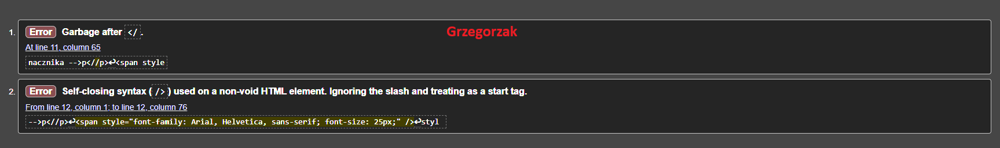
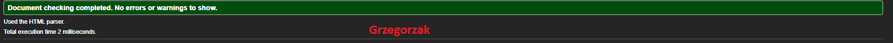

Co to jest walidacja:
Program (może być aplikacja Web, czyli strona WWW) sprawdzający poprawność
dokumentu o określonej składni, np. walidator kodu HTML, walidator kodu CSS. Pomyślne
przejście walidacji oznacza zwykle, że kod został napisany zgodnie z gramatyką (składnią)
danego języka.
Podaj rodzaje walidacji:
walidator kodu HTML
walidator kodu CSS.
Co umie wskazać walidator (dwie informacje):
- miejsce błędu oraz podać przyczynę błędu
- mogą podawać numer błędu.

